也紀念我們永遠的朋友 李士傑先生（Shih-Chieh Ilya Li）。
GNU Cash－從今天開始記帳！
簡介
GNU Cash 是一套適用於所有平台的，非常有名的開源記帳軟體。在能免費使用的記帳軟體中，這或許是功能最為全面的一套－－他甚至適合小型企業記帳使用。
當然，有著強大的功能同時，也意味著它運用起來比較複雜，難以入手。
網路上有很多中文教學，給了我不少啟發與幫助，但也因為有些觀念與使用方式互有矛盾，而讓我感到困惑。為了避免記帳記錯，後來索性去直接去挖英文觀念手冊，私下研究了一陣子後，便決定將自己的心得與注意事項分享給大家看看。
因為這個確實蠻難的，如果您發現我哪裡弄錯了，請務必提醒一下，以免誤人記帳了。
下載與安裝
Mac OS X 與 Windows 使用者，請來這邊抓取檔案加以安裝：https://www.gnucash.org/download.phtml
因為這個軟體相當有名，絕大多數的 Linux 發行版都有將它納入套件庫中，請直接從您發行版的套件庫中安裝即可。如果您無論如何找不到，可前往上面的連結，下載源碼包來試試。
基本觀念
GNU Cash 採用複式記帳法作為他的基礎。
所謂的複式記帳法是說：「每一筆交易都會被紀錄在至少兩個帳目上」－－您可以這樣理解：每一筆「交易」都是水流，從一個「帳目」流入另一個「帳目」。
這邊的「帳目」是什麼呢？
帳目在這邊的意思，就是您記帳時用來分類的容器。舉例來說「支出：服裝」算是一個帳目，「收入：薪水」也算一個帳目，「資產：錢包」當然也是一個帳目。一旦您進行了「購買牛仔褲」、「發薪」、「繳稅」這類的「交易」，錢就會從一些帳戶，流到另外一些帳戶中。
「讓錢在帳目之間流動，就叫交易。」－－只要記得這句話，您大概就能理解 Gnu Cash 的運作方式了。
因為交易只是讓錢流動起來，而不是憑空創造，所以這些錢絕對不會無中生有地從一個帳戶中蹦出來。如果有筆帳款流入某帳戶，您一定能追蹤到它的來源。這就是複式記帳的好處：至少理論上，它是不會出現來源不明的交易項。
會計等式
在 GNU Cash 中，帳目被分為五大類：Assets（資產）、Liabilities（負債）、Equity（淨值）、Income（收入）、Expenses（支出）。
- 資產
- 意味著您擁有的東西。
- 負債
- 意味著您欠的東西。
- 收入
- 意味著您增加的價值。
- 支出
- 意味著您減少的價值。
- 淨值
- 您本身的價值。
關於淨值 = 您本身的價值。事實上是這樣被定義的：
資產 - 負債 = 淨值
您的價值 = 您擁有的減去您所欠的
非常直觀對吧？這就是會計學中最基本的「會計等式」，如果您對此有興趣，可以翻翻會計書或查查維基百科。
以上兩個等式，定義了一個靜止的資產狀態。不過在 GnuCash 中，我們用的不完全是上面的等式。因為當交易發生、錢在流動時，那就會在淨值上追加兩項代表變化的要素，於是成為以下的新平衡關係：
資產 - 負債 = 淨值 + （收入 - 支出）
這等式是什麼意思呢？
和舊等式相比，在新等式中，收入與支出是獨立於淨值之外的。這表示淨值 = 您本身的價值，是不會因為您的「所賺所花」而改變－－你一開始有那麼多價值，您到最後也還是那麼多價值，您的淨值永不改變！
這點特性在記帳中有什麼用，我們晚點再說。
GnuCash 無論何時都會遵循以上的等式。如果記帳時有困惑，對照這個等式，很多時候就能立刻了解了。就先留個印象吧。
科目類型
上述的「會計等式」理論將帳目分成了 5 大類。但在 GnuCash 中，為了方便程式做一些自動化工作，五種帳目被更進一歩細分，分成了 12 種。如下所示。
Assets 類（六種）
代表您所擁有的東西。GnuCash 將它細分為六種。
Cash（現金）
包括錢包、存錢筒、床墊下或書本裡面夾的錢，總之就是手上最容易流動的錢。
Bank（銀行）
這是保存在其他機構的錢，包括銀行、信用合作社、郵局、甚至是經紀人之類的地方。
是次易流動的錢，因為它可以很輕易地轉換為現金。
Stock（股票）
這是記錄股票與債券的地方。
毫無疑問，這些東西也有價值，但和其他的資產不同，它的價值並不固定－－通常不會和您購入它時的價值相同。故（相對而言）也不容易轉換為現金，因為他的價值受到合適的買家與出場時機影響。
為了處理這些東西，本帳戶類別將會提供特別的處理方式。
關於股票設定與自動抓價格的方法，這邊的部落格有提供心得：https://blog.xuite.net/michaelr/linux/23599287
如果上面用了也無效，或許因為您的電腦上沒裝某些東西，官網另有說明請參考看看：https://gnucash.org/docs/v2.4/C/gnucash-guide/invest-stockprice1.html
Mutual Fund（共同基金、信託基金）
就是一般我們說買股票、買基金投資的那種「基金」。和股票有許多相似之處。
Accounts Receivable（應收款項、A/Receivable）
一言以蔽之，這裡記錄別人欠您的錢。
這些當然也算是您資產的一部份，所以歸入資產之中。
請參考後面 Accounts Payable 的說明，Account Receivable 是它的反面。
Other Assets（其他資產）
其他未涵蓋於其上的資產。
liability 類（三種）
您欠別人的東西，GnuCash 將其分為三種。
Credit Card（信用卡）
信用卡類型的帳戶，可用來管理信用卡收據與帳單。
這是一種短期貸款帳戶，也可以用在銀行的貸款上面。
Accounts Payable（應付帳款、A/Payable）
這是應付但尚未付的錢……也就是您欠別人的錢。通常用在商務上。
比方說，您談妥了一筆生意要買入某機器 A，整個生意流程已經跑起來了，您注定要在不遠的未來付上一大筆錢。但在這時間點，錢您還沒付，那要如何紀錄這筆交易？
您可以從這類帳戶直接出款到某個支出 (Expense) 帳戶中，去購入您的機器 A。當然，您此時還沒實際出款。換句話說，此時這筆錢是積欠在別人那裡、要記在帳上。
實際出款時，再從某個資產 (Assets) 類帳戶轉帳到應付帳款中，將債務抵消結清。
Liability（普通貸款）
GnuCash 用這個來追蹤其他不屬於以上的長期貸款，包括車貸與房貸等。
equity 類（一種）
在 GnuCash 中， Equity 被作為初始淨額（opening balances）使用。
初始淨額的意思是說，在您建立帳本，開始學習記帳之前，你手頭上應該會有些資產、有些負債。這些東西來路混雜，無從追蹤，但您就是有它。
對於這些東西，您可以將其列入 opening balances 中，作為您的「淨價值」登錄起來。
沒錯，這個「最初狀況」，就是 GnuCash 中唯一一個提供您淨值的地方。之後的記帳中，您的淨值是不會改變的。
income 類（一種）
您的所有收入都該被歸在 Income 類裡，這包括薪水、稿費、公司獎金、老爸給的壓歲錢等等等。
expense 類（一種）
包含您所有的支出。這包括飲食、稅金、書籍、娛樂費、汽車加油錢、罰款等等。
關於這些科目，您可以在這裡找到詳細介紹：
https://gnucash.org/docs/v2.4/C/gnucash-guide/accts-types1.html
設定 Gnu Cash 的科目體系
理論說明暫告一段落，接下來進入 GNU Cash 實戰！
請將 GNU Cash 打開。
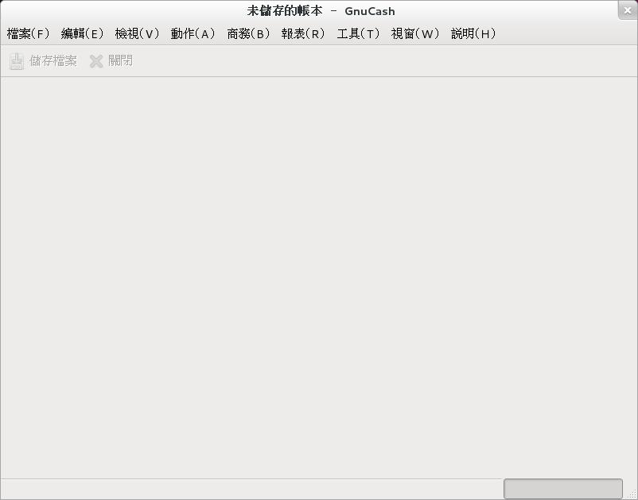
▲ 圖1：剛打開 GnuCash 的示意圖（不含精靈畫面）。
初次開啟時，他會問您要不要用精靈新增科目體系。
精靈新增的科目體系沒什麼不好，但就是稍微有點龐雜瑣碎，容易讓初學者覺得好厲害但完全看不懂，所以建議先把精靈關掉，我們手動來建立科目體系。當然，您也可以先用精靈建立一次看看，看看大概會變成怎樣。
把精靈關掉，依照【檢視】→【新增科目頁】的順序，打開所謂的「科目頁」。
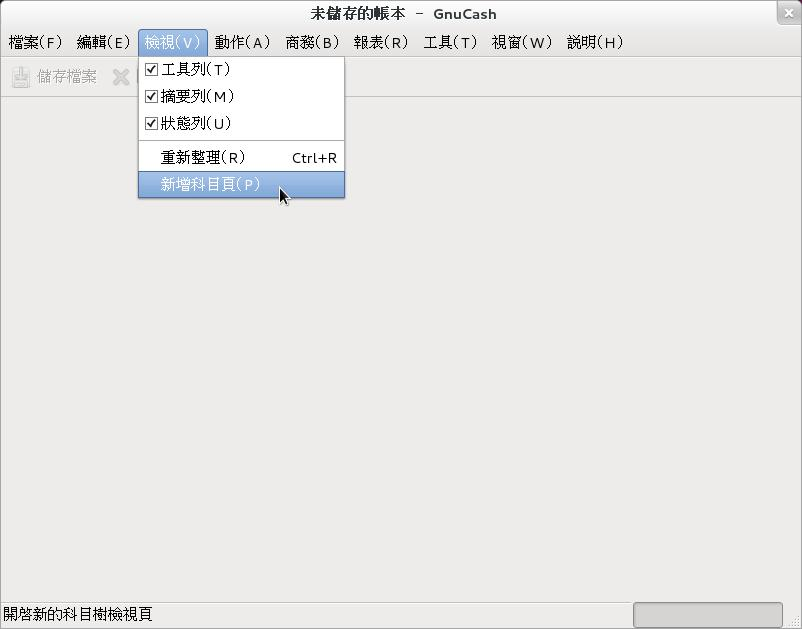
▲ 圖2：新增科目頁
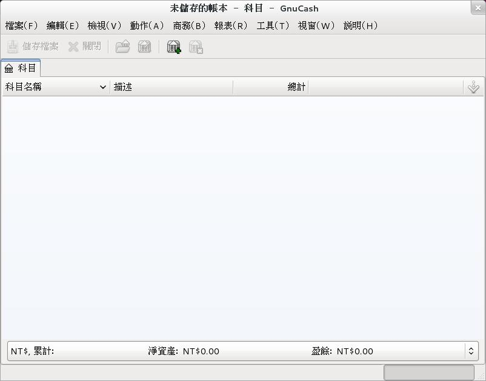
▲ 圖3：這就是科目頁，目前還空空如也。
然後按下此時唯一能按的按鈕「新增科目」，叫出新增科目視窗。
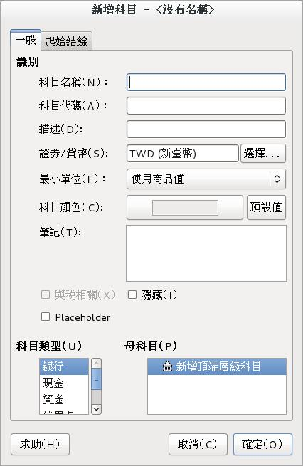
▲ 圖4：看起來就很複雜的新增科目視窗。
裡面有不少東西可以設定。不過此處只需要輸入科目名稱－－如：郵局帳戶、錢包、購衣費用－－就好，其他像是科目代號等不知所謂的東西，都不用去管。
另外要注意以下三個選項："placeholder"、「科目類型」與「母科目」。
"placeholder" 打勾的話，表示這個科目「不允許直接被拿來記帳」，只能作為一個容器（資料夾）使用。反之不打勾的時候，科目既可做為容器使用也可直接記帳。
為了避免混淆，強烈建議當容器的科目通通要打勾。
「母科目」表示您現在新建的科目，要放在哪個（已經存在的、作為容器的）科目底下。請檢查一下位置是否正確。
「科目類型」方面，您必須在內建的十二種科目中選一種，來套用給當前要新建的科目。
應該建立哪些科目？
首先要建立的科目是您的「資產」類科目，這裡是您藏錢的地方。比方說「錢包一號」、「郵局帳戶」、「床底下（私房錢）」，詳情請見上方的科目類型說明。
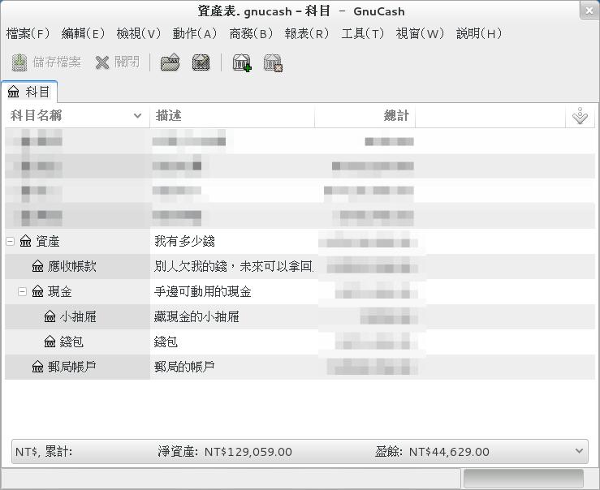
▲ 圖5：我的資產體系列表，請參考著建立您自己的版本。
「資產（容器）」的帳戶類型是選「資產」，「現金（容器）」的帳戶類型是選「現金」。以上兩大項只作為容器用，本身不拿來記帳，故 "placeholder" 都有打勾。
在資產大項下又依我個人的需要，另建了「郵局」、「應收帳款」、「錢包」、「小抽屜（我把私房錢放這）」等項目。
各帳戶的「描述」一項是我填好玩的，其唯一的用途只是用來提醒使用者自己這帳戶是幹嘛用，不填也沒關係。
您在建立這些科目時，如果資產帳戶中原本就有錢（如銀行中原本就有存款一萬元），則可直接在【新增科目視窗】→【起始結餘標籤頁】中設定當前帳戶中所具有的金額，GnuCash 會自動產生一個新的「初始淨值」帳目出來。
另外，此處也不用急著想一次到位，帳戶結構有異動，日後還可以回來新增與修改。科目不夠用時再添加就好。
資產建立好後，其次要建立的是收入和支出帳戶。畢竟記帳主要就是在記收支。
收支都是依據您想要的統計方式來建立。以支出為例，有人可能只想要做出食衣住行育樂六大類，這是很標準做法，但如果您是某方面的發燒友，則完全有可能會想將某些項目切細，比方說把電玩主機的支出分成五類，或是把桌遊獨立成一類出來，總之是因人而異。
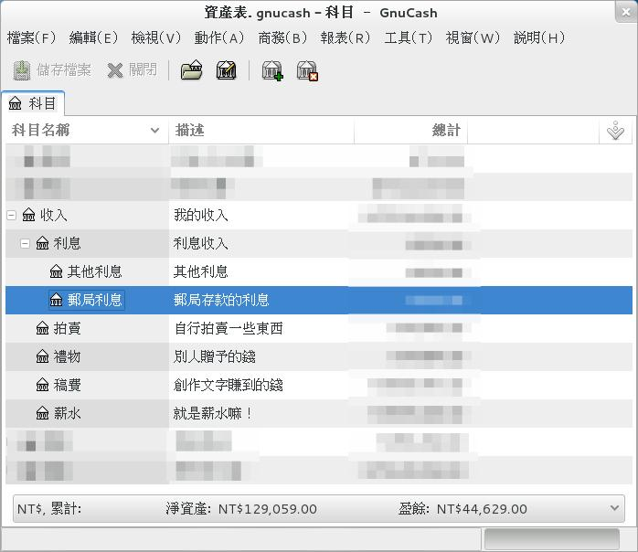
▲ 圖6：收入科目範本。
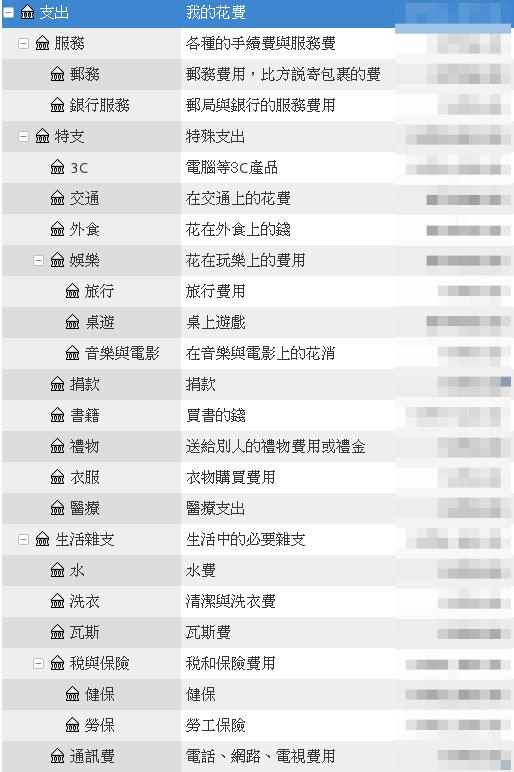
▲ 圖7：支出科目範本。看起來項目很多，但您不用像我一樣建立這麼多。有需要的再建。多不如少，少不如巧，剛剛好夠用才是最好的。
以上這些建立科目的動作，如果透過精靈來弄，結果就是會冒出一大堆您用不到的科目來，反而讓 GnuCash 變得很複雜難用。因此這裡才推荐用手工的方法來建立科目體系。
基本的記帳法
在 GnuCash 中有很多方法可以記帳，不論用什麼方法，記在帳本上的東西最終都是一樣的。不同方法各有各的方便，請自行選擇使用。
此處先說最簡單最不容易弄錯的方法，那就是透過「轉帳」視窗來記帳。
請在 GnuCash 中按下 Ctrl + T 鍵，或是點開選單中的【動作】→【轉帳】。
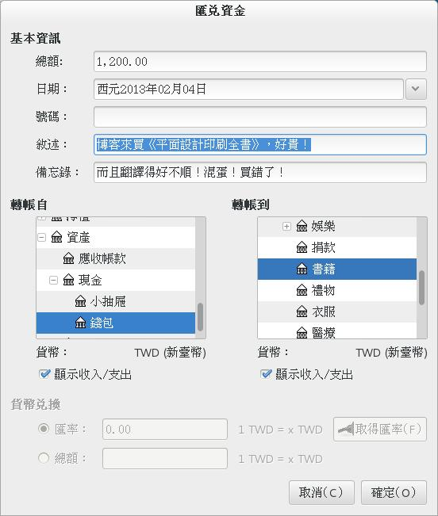
▲ 圖8：轉帳視窗。
請看上圖，這是一個轉帳視窗。重要項目包括……
- 總額：轉帳的金額。
- 敘述：這是本次交易的明細，不填就只是筆白帳，日後也看不懂，沒有記帳的效果。一定要填。
- 備忘錄：這是「敘述」的補充。其實有敘述就夠了，不寫也無妨。
- 「轉帳自」與「轉帳到」：您要在此指定金流的起點與終點。舉例來說，花錢時是讓錢從資產類科目流入支出類科目，收錢時則是讓錢從收入類科目流入資產類科目。
其他沒提到的都不用理會。
記錄以上這些訊息後，按「確定」完成轉帳，然後我們就可以去看看轉帳結果了。
看法也很簡單，總之就是去科目頁，雙擊有涉及剛剛那筆帳的科目（此處會涉及兩個科目），就會開啟個別科目的視窗。如下：
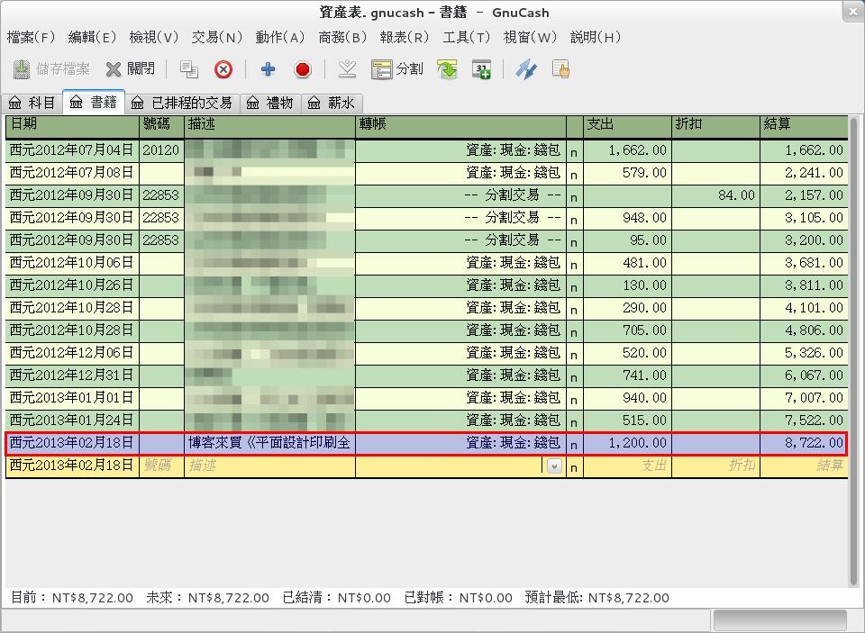
▲ 圖9：書籍（支出）帳戶。
帳目會自動依時間排序，新的帳會出現在最下面。
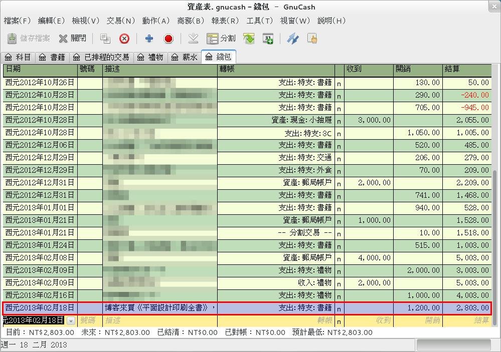
▲ 圖10：錢包（資產）帳戶。與書籍（支出）帳戶一樣，同樣也顯示了剛剛記下的那筆帳－－不過請仔細看，對應帳戶中的金流方向是相反的。
所有涉及這筆帳的科目分頁，都會將您剛剛填入的帳給明確列出來，並在轉帳的那一欄，顯示相應的轉帳來源。
轉帳項目後面那一排 “n”是用來對帳用的。顯示 n 表示 no 未對帳，顯示 y 表示 yes 已對帳，顯示 c 表示 clear 無需對帳。因為我沒在對錢包的帳，上面顯示的都是 n 來著，不過對於那種有帳單的科目，比方說一個信用卡帳戶，帳單寄來時倒是可以對帳看看，以免失手眼殘記錯帳，數字不對又找不到錯在哪裡。
如果您對此有興趣，想要開啟對帳視窗，請選【動作】→【對帳】。
如何對帳扯比較遠，此處不多提。繼續看記帳的部份。
假使您不想用「轉帳」視窗記帳，也可直接在科目頁中記帳。
請看上圖，每個科目頁最下方都有一行空白列（鵝黃色那行），這個空白列就是讓您直接記帳用的。您可以直接手工填入所有項目，而且內容只要填一次就好，不用每個相關的科目頁都手動去填，不同科目頁的內容，會隨著您輸入或更改相關帳目，自動產生並同步修正。
基本記帳功能就是這麼簡單。
分割交易
現在我們來看個難一點的問題：「如果一筆帳同時涉及到超過三個以上的科目，怎麼辦？」
打個比方，今天是您期待已久的發薪日，依照老闆與您的約定，您應該可以拿到 22000 元（請節哀），可是事實上打進您銀行帳戶的金額卻不是 22K，而是 22K - 國保、勞保、健保、退休儲蓄等照理說是為你好，而且你還不能說不要的東西。最後實際入帳的奶粉錢只有 20500左右。
這時，您要怎麼記您的帳呢？
方法有很多。具體用哪種方法，則取決於您想要記得多精確。
最簡單的方法，是直接記一筆 20500 元的薪水收入進入您的銀行戶頭，方便快速。問題是，您賺的辛苦錢擺明就不只 20500，另一方面，您也無法記錄您的保險費繳費狀況，你什麼時候開始繳，這個月有沒有繳，去年與今年的保險費差異，您都不知道。
其次，您可以用銀行帳戶做為緩衝，將一筆交易拆成多筆－－先將 22000 的薪水轉入銀行帳戶，然後從這個帳戶中付出各種各樣的錢，最後的結餘就會成為 20500。
相比最簡單的方法，上述的記帳法能讓您確實記下正確的薪資與花銷，不過它也有問題：您的銀行帳戶中，事實上從來沒有一筆 22000 元的入帳，也沒有因為要繳各種保險費而做出的支出。您拿著銀行存簿基本沒法對帳－－除了結餘是一樣的以外。
如果您希望 GnuCash 真正解決這個問題，您大可以試試分割交易的功能。
在先前錢包帳戶的圖片中，有些交易的轉帳來源被註明為「-- 分割交易 --」，這意味著此項交易有三個以上的帳戶同時涉入其中。具體涉及情況，您必須先選擇那一項交易後，再按「分割」按鈕將其打開來看。
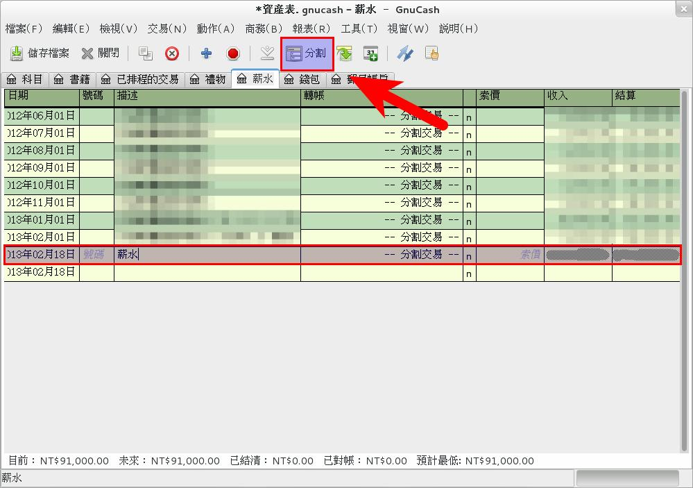
▲ 圖11：薪水（收入）帳戶。可以按「分割」按鈕，來瀏覽或編輯單一交易的內部狀況。
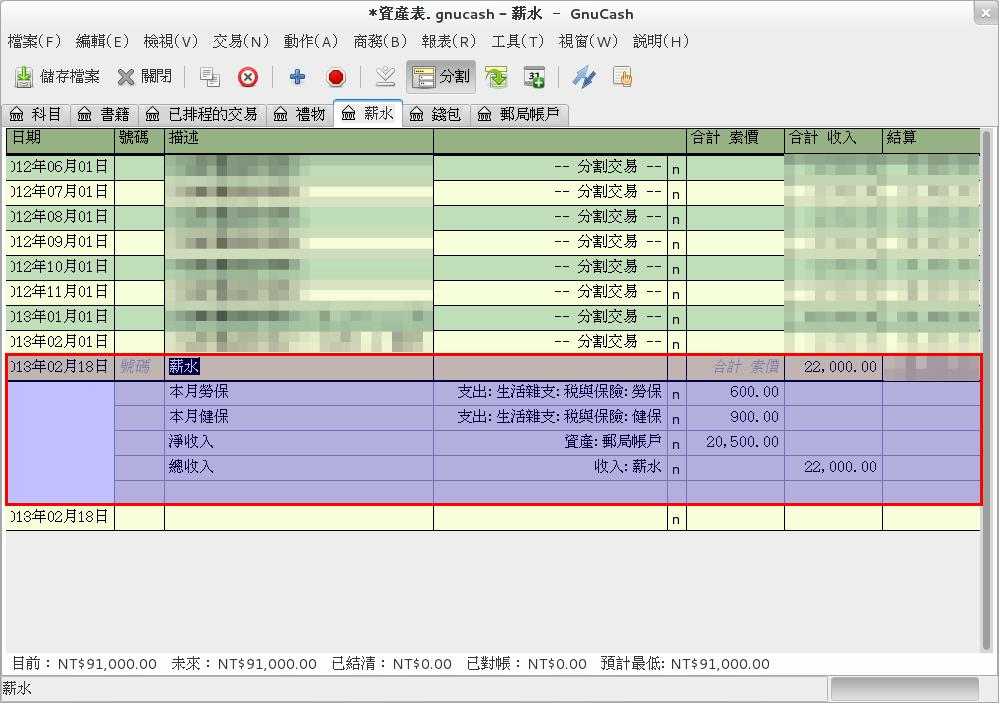
▲ 圖12：按過分割按鈕後，交易的內部狀況就一清二楚了。您可看到本交易一共涉及四個科目。
那要如何創建這種分割交易？
請用「分割按鈕」打開一個新交易行（也就是最下方的那個空白行），然後逐行填入您希望記錄的東西，就像上圖的範例一樣。
分割交易時需要注意的重要事項是：「您填入的所有金額，必須要保持正負相等，維持流入等於流出」。如果數額沒有平衡，就會出現失調或無主的提示（見下圖）。這種狀況當然不該發生，您應該確保它保持平衡。
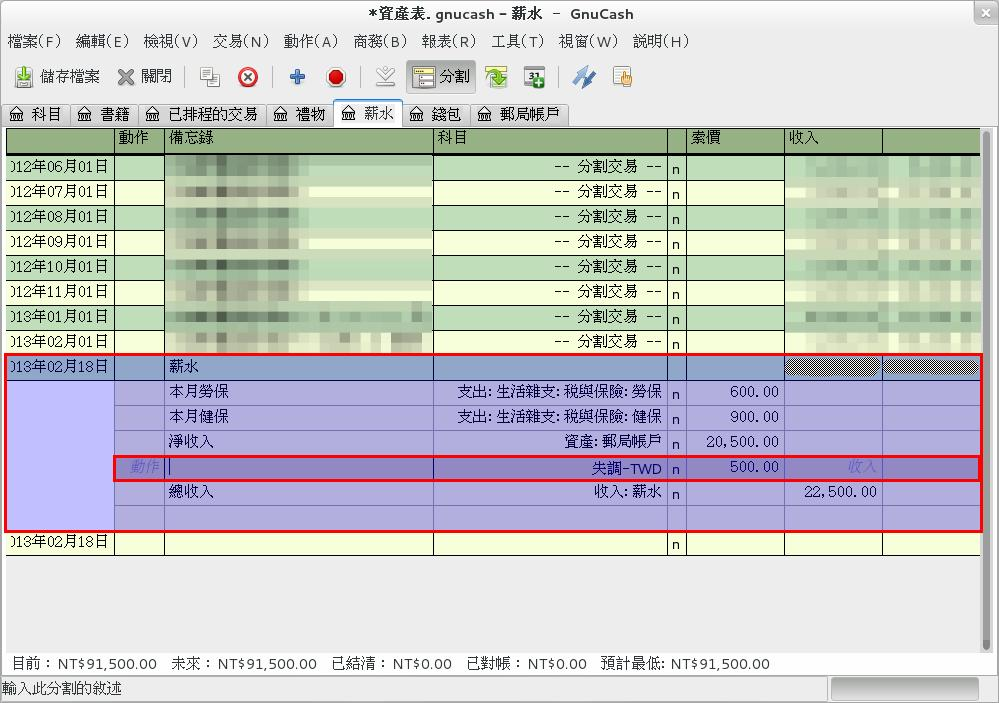
▲ 圖13：金流沒有平衡的一個範例。請務必平衡它。
排程交易
除了純手工記帳以外，您還可以設定 GnuCash 定時、自動地，建立一些會定期發生的固定交易。比方說每月薪水入帳、每月繳上網費、離婚贍養費轉帳等定時定額的固定性費用，這些瑣碎的帳目都可以交由 GnuCash 來自動建立。
設定方法有兩種。
第一種是先用普通方式建立一次交易，然後在交易上按右鍵，選擇右鍵選單中的【排程】選項，就會跳出【新建排程視窗】，稍加設定後就可以將當前選擇的交易給排程化。
此處順便一提，新建排程視窗中要求您輸入的交易名字，並非指顯示在帳目中的交易敘述－－這個名字是日後您用來管理排程時用的，只會顯示在排程交易編輯器裡面。
另一種建立方法，則是透過【動作】→【排程交易】→【排程交易編輯器】來管理。
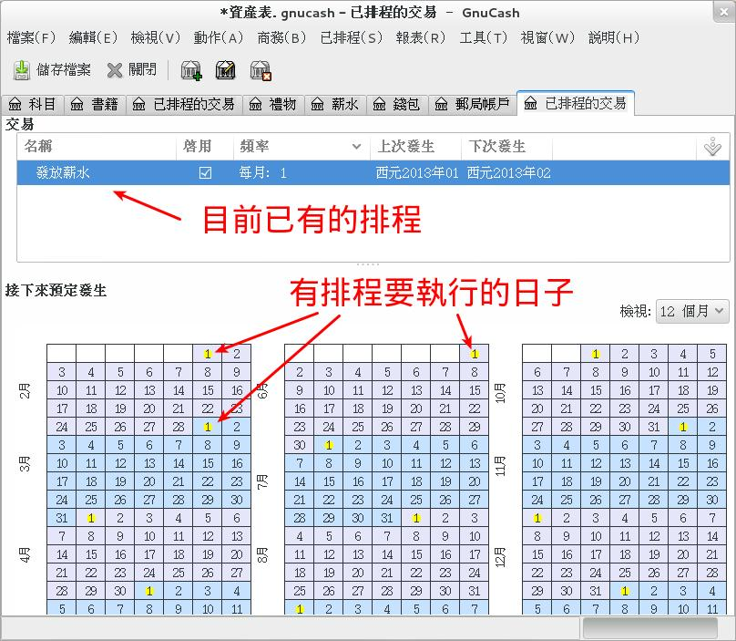
▲ 圖14：這就是「排程交易編輯器」。可在這管理您的排程交易。
想要新建一筆排程交易時，打開排程交易編輯器，然後點選單中的【已排程】→【新增】（您不先打開【排程交易編輯器】是無法在選單上看到【已排程】這個選項的）。新建排程視窗就會跳出來。
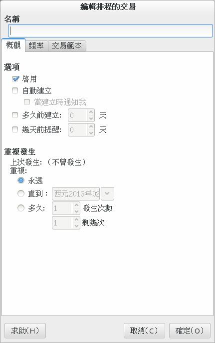
▲ 圖15：新建排程視窗。
這邊的視窗，等於您用右鍵選單的方法時，按下方【進階】按鈕時會跳出來的視窗。比起用右鍵選單法，用這種方式從頭建立排程時必須要去編輯「交易範本」頁籤，來設定您所要定時執行的交易具體為何。
視窗中的選項大約講一下：
- 啟用：有啟用才會定時生效。
- 自動建立：時間到了就自動執行（通常是開檔時執行）。沒勾的話，您要按【動作】→【排程交易】→【自上次執行後……】才會執行。
- 建立時通知：可以提供實際建立前的確認機會。
- 幾天前提醒：比方說，您有信用卡費要自動扣款，提前提醒可以早幾天提醒您先一步將錢匯入銀行帳號，免得扣款扣不到錢諸如此類。當然這種提醒也是要您有定時打開 GnuCash 的習慣才會有用。
排程交易的完整說明請看此頁：https://gnucash.org/docs/v2.4/C/gnucash-guide/txns-sxn1.html
用圖表顯示財富
前面大致說明了如何記帳，文章最後來看看要如何看帳。
看帳最基本的方法，當然是透過先前記帳時的科目介面來看。不過那種方法比較不直觀，GnuCash 另外提供了圖表產生的功能。
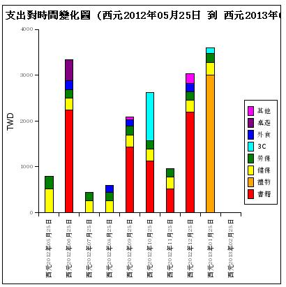
▲ 圖16：其中一種圖表。
GnuCash 可產生的圖表種類很多，預設約有 50 種左右，大致上分為「長條圖」、「圓餅圖」、「表格」等等。這 50 多種報表涵蓋了資產、收入、支出的方方面面，每種圖表還可以在一定程度內由使用者自行調整，基本上不用擔心會不夠用。
不管哪種圖，叫出的方法都一樣，也就是要從主選單的【報表】項目中來選擇使用；比方說上圖，就是透過【報表】→【收入 & 支出】→【支出長條圖】所叫出來的。
叫出圖表後，若有些小地方（如時間範圍等）不盡如人意，此時就要開啟設定視窗加以微調。
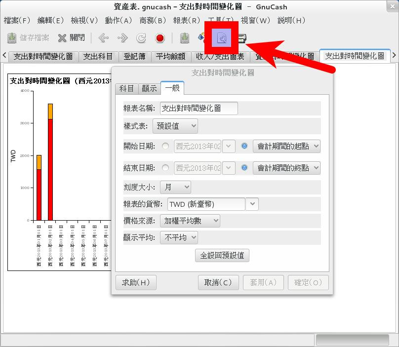
▲ 圖17：開啟設定視窗。
不同圖表的設定略有不同，但都大同小異，看看就會操作。這裡就不多作贅述了。
相關連結
- GnuCash 官網：https://gnucash.org/
- GnuCash 手冊：https://gnucash.org/docs.phtml
專欄總覽


E-Mail：contact@openfoundry.org Address：台北市南港區研究院路2段128號 中央研究院資訊科學研究所 . 隱私權條款. 使用條款

評論
How to pay money to buy GUNCASH account software ?